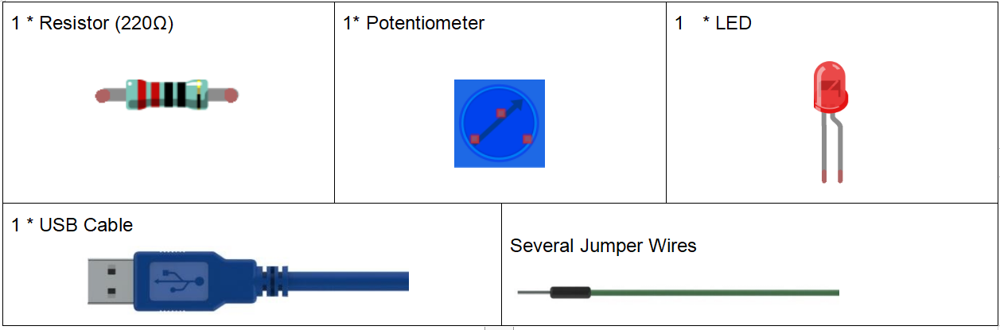
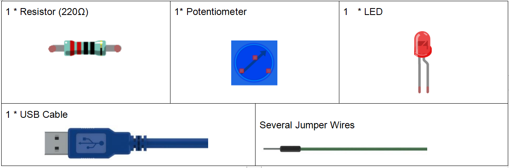
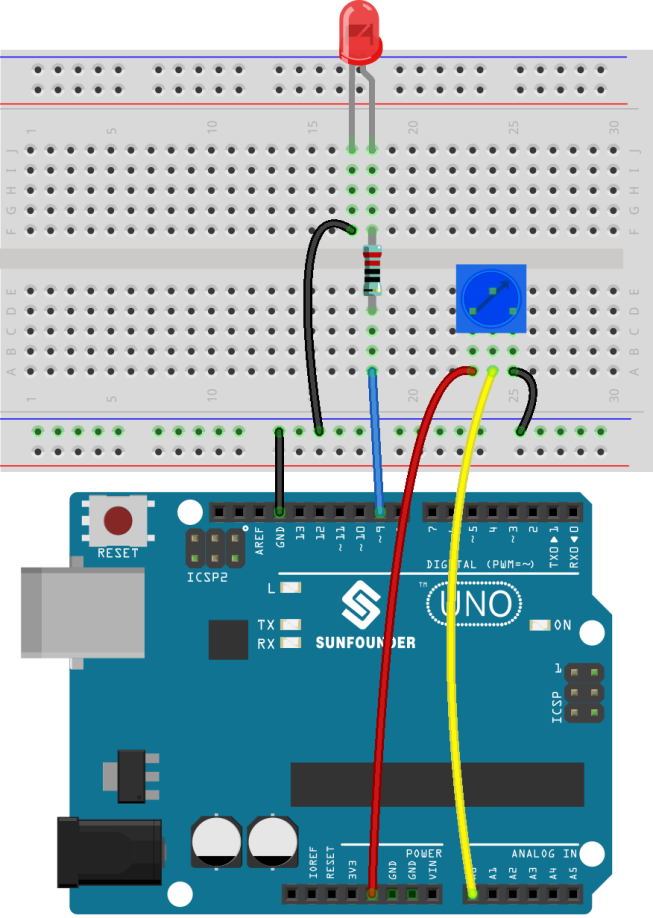
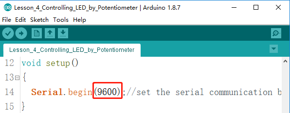
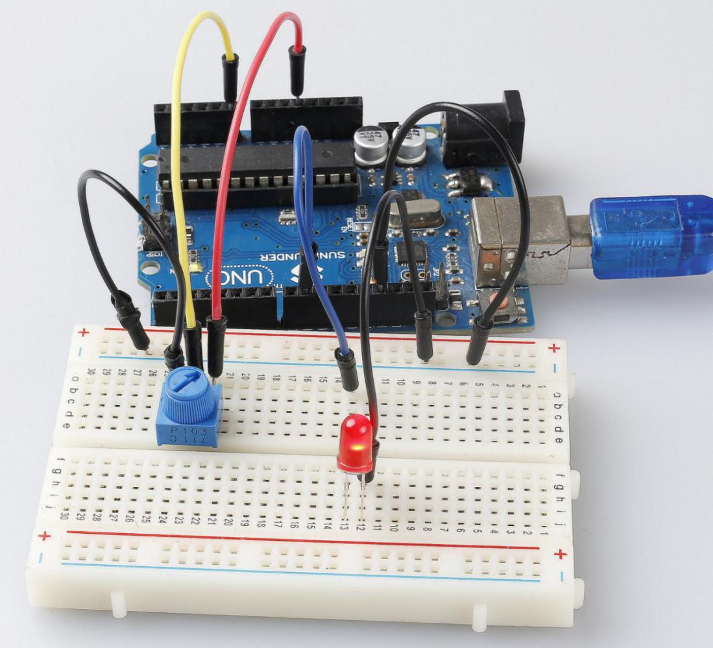

Lesson 4 Controlling an LED by Potentiometer¶
Introduction¶
In this lesson, let’s see how to change the luminance of an LED by a potentiometer, and receive the data of the potentiometer in Serial Monitor to see its value change.
 

{kind=link}
Experimental Principle¶
Potentiometer
Potentiometer is also a resistance component with 3 terminals and its resistance value can be adjusted according to some regular variation. Potentiometer usually consists of resistor and movable brush. When the brush is moving along the resistor, there is a certain resistance or voltage output depending on the displacement.

The functions of the potentiometer in the circuit are as follows:
Serving as a voltage divider
Potentiometer is a continuously adjustable resistor. When you adjust the shaft or sliding handle of the potentiometer, the movable contact will slide on the resistor. At this point, a voltage can be output depending on the voltage applied onto the potentiometer and the angle the movable arm has rotated to or the travel it has made.
Serving as a rheostat
When the potentiometer is used as a rheostat, connect the middle pin and one of the other 2 pins in the circuit. Thus you can get a smoothly and continuously changed resistance value within the travel of the moving contact.
Serving as a current controller
When the potentiometer acts as a current controller, the sliding contact terminal must be connected as one of the output terminals.
Serial Monitor
Serial Monitor is used for communication between the Mega 2560 board and a computer or other devices. It is a built-in software in the Arduino environment and you can click the button on the upper right corner to open it. You can send and receive data via the serial port on the control board and control the board by input from the keyboard.

Here, the Serial Monitor serves as a transfer station for communication between your computer and the Uno board. First, the computer transfers data to the Serial Monitor, and then the data is read by the Uno board. Finally, the Uno will perform related operations. Click the icon at the top right corner and a window will pop up as shown below:

Analog V.S. Digital
A linear potentiometer is an analog electronic component. So what’s the difference between an analog value and a digital one? Simply put, digital means on/off, high/low level with just two states, i.e. either 0 or 1. But the data state of analog signals is linear, for example, from 1 to 1000; the signal value changes over time instead of indicating an exact number. Analog signals include those of light intensity, humidity, temperature, and so on.

Principle:
In this experiment, the potentiometer is used as voltage divider, meaning connecting devices to all of its three pins. Connect the middle pin of the potentiometer to pin A0 and the other two pins to 5V and GND respectively. Therefore, the voltage of the potentiometer is 0-5V. Spin the knob of the potentiometer, and the voltage at pin A0 will change. Then convert that voltage into a digital value (0-1024) with the AD converter in the control board. Through programming, we can use the converted digital value to control the brightness of the LED on the control board.
The schematic diagram:

Experimental Procedures¶
Step 1: Build the circuit
{kind=link}
Step 2: Open the code file.
Step 3: Select the Board and Port.
Step 4: Upload the sketch to the board.
Step5: Open the Serial Monitor.
Find the Serial.begin() code to see what baud rate is set, here is 9600. Then click the top right corner icon to open the Serial Monitor.
{kind=link}
Step6: Set the baud rate to 9600.
The default baud rate for serial monitors is 9600, and if the code is also set to 9600, there is no need to change the baud rate bar.

Spin the shaft of the potentiometer and you should see the luminance of the LED change.
If you want to check the corresponding value changes, open the Serial Monitor and the data in the window will change with your spinning of the potentiometer knob.
{kind=link}
Code¶
Code Analysis 4-1 Read the value from A0¶
analog Read() reads the value from the specified analog pin. This means that it will map input voltages between 0 and 5 volts into integer values between 0 and 1023.
Code Analysis 4-2 Print values on Serial Monitor¶
Serial.print("Input: "); //print "Input"
Serial.println(inputValue); //print inputValue
Serial.print():Prints data to the serial port as human-readable ASCII text. This command can take many forms. Numbers are printed using an ASCII character for each digit. Floats are similarly printed as ASCII digits, defaulting to two decimal places. Bytes are sent as a single character. Characters and strings are sent as is.
Serial.print(): Commandant takes the same forms as Serial.print(), but it is followed by a carriage return character (ASCII 13, or ‘r’) and a newline character (ASCII 10, or ‘n’).
Code Analysis 4-3 Map the values¶
map(value, Fromm, from High, to Low, thigh) re-maps a number from one range to another. That is, a value of Fromm would get mapped to one of to Low, and a value of from High to one of thigh, values in-between to values in-between, etc.
As the range of led Pin (pin 9) is 0-255, we need to map 0-1023 with 0-255.
Display the output value in Serial Monitor in the same way. If you are not so clear about the map() functions, you can observe the data in the Serial Monitor and analyze it.
Serial.print("Output: "); //print "Output"
Serial.println(outputValue); //print outputValue
Code Analysis 4-4 Write the value of the potentiometer to LED¶
analogWrite(ledPin, outputValue); //turn the LED on depending on the
output value
Write the output value to led Pin and you will see that the luminance of LED changes with your spinning of the potentiometer knob.
analog Write(): Writes an analog value (PWM wave) to a pin. It has nothing to do with an analog pin, but is just for PWM pins. You do not need to call the incommode() to set the pin as output before calling analog Write().
Experiment Summary¶
This experiment can also be changed to others as you like. For example, use the potentiometer to control the time interval for the LED blinking. It is to use the value read from the potentiometer for delaying, as shown below. Have a try!